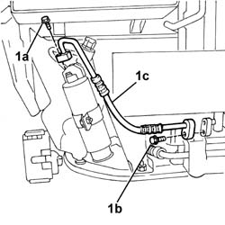

5040A52 pipe from condenser to dehydrating filter - r+r
- Path
- Procedures > 50 AUXILIARY UNITS > 5040 AIR CONDITIONING CASING AND COMPONENTS > 5040A air conditioner coolant circuit > 5040A52 pipe from condenser to dehydrating filter - r+r
- Kind
- repair procedure (removal / refitting; the operation number is the code)
- Applies to
- engines: 1.2 8v, 1.6 16v, 1.3 JTD 16V, 1.9 JTD 8V, 1.9 DIESEL; all production periods
- Interactive page
- https://sloeber94.github.io/elrnDB-fDbl/en/#/2584826
Applies to: engines: 1.2 8v, 1.6 16v, 1.3 JTD 16V, 1.9 JTD 8V, 1.9 DIESEL; all production periods
 Removing
Removing
 Refitting
RefittingPlace the car on a ramp.
Op. 5040A10 AIR CONDITIONING REFRIGERANT CIRCUIT - DRYING AND REPRESSURIZING
Disconnect the battery negative terminal.
Op. 7055B54 PROTECTION/GUARD UNDER ENGINE - R.R.
1. Undo the bolt (1a), dehydrating filter side, and the bolt (1b), condenser side, and remove the pipe (1c).

Applies to: engines: 1.2 8v, 1.6 16v, 1.3 JTD 16V, 1.9 JTD 8V, 1.9 DIESEL; all production periods
Refitting
RemovingPosition the pipe and secure it with its bolts to the condenser and dehydrating filter.
Op. 7055B54 PROTECTION/GUARD UNDER ENGINE - R.R.
Connect the battery negative terminal.
Op. 5040A10 AIR CONDITIONING REFRIGERANT CIRCUIT - DRYING AND REPRESSURIZING
Remove the vehicle from the ramp.